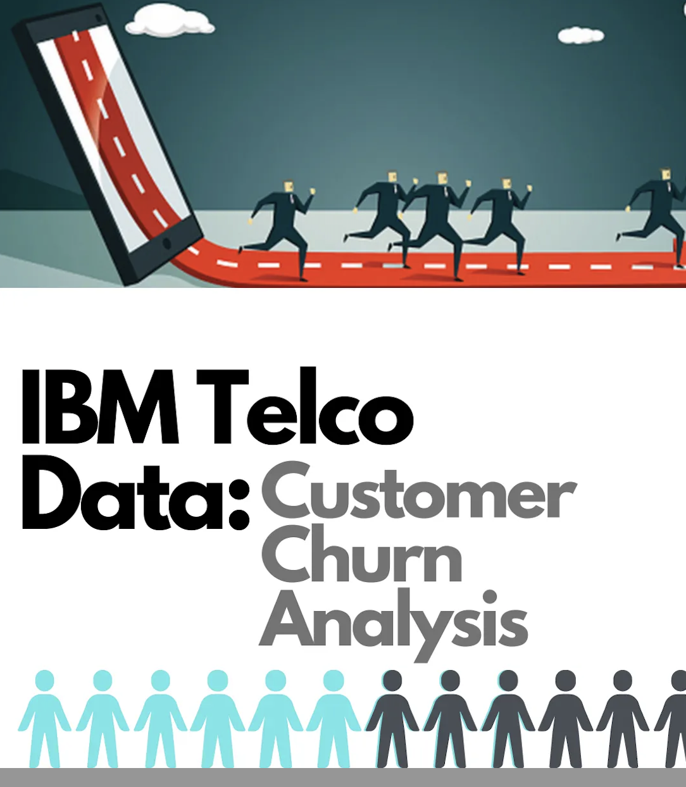
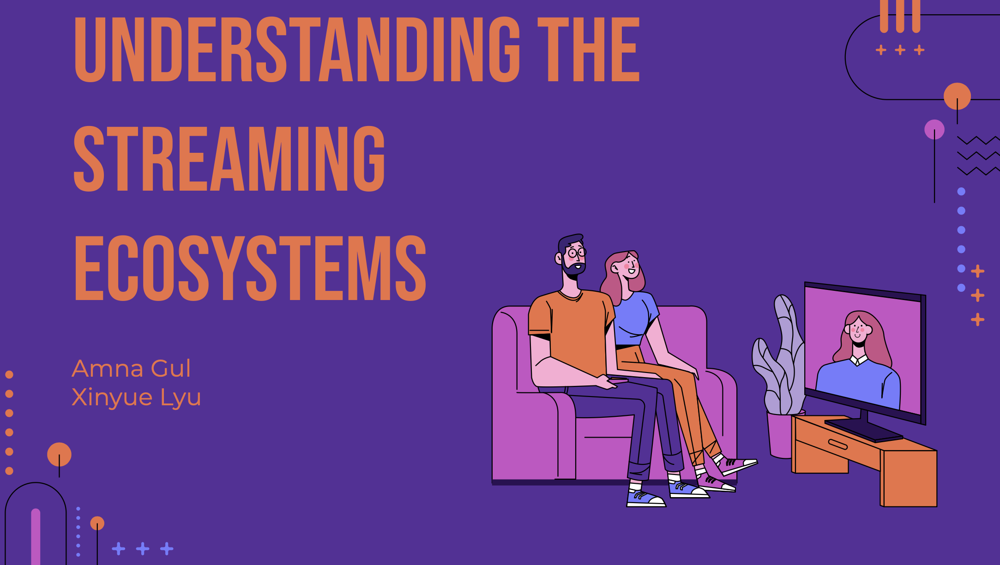
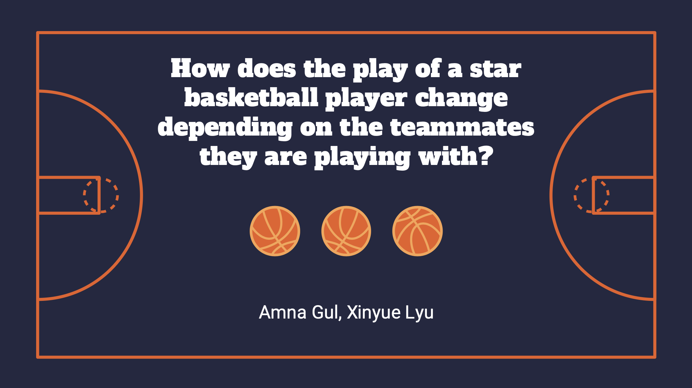
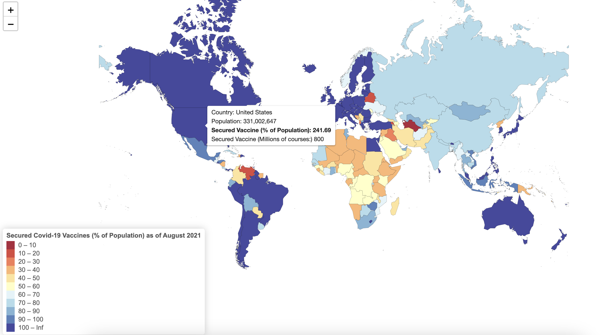

Projects
Building a Paul Graham Digital Twin Startup Mentor with RAG

Using ArcGIS and GeoSpatial Analysis for Strategic Bank Branch Site Selection

Decoding Sales Drivers In E-Commerce (Causal Analysis)

Decoding Sales Drivers In E-Commerce (Causal Analysis)

Understanding the Streaming Ecosystems via ReelGood Data Insights

How does the play of a star basketball player change depending on the teammates they are playing with?

Pre And Post Covid AirBnB Trends in the LA Market
Accelerating Content Discovery Using Advanced NoSQL Indexing Techniques in MongoDB
Insurance Risk Modeling Using Regression and Classification Techniques

Driving Distance vs. Golf Performance Regression Analysis
Understanding the Rapid Rise of DeepSeek AI and Its Implications
Key Strategies for Maximizing Growth and Success During an Internship
Using Deep Learning for Abnormality Detection in Chest X-Rays
Predicting Tip-Fare ratio for NYC Yellow Cabs Using Traditional ML Models

Speaker Identification Through Text Analytics
